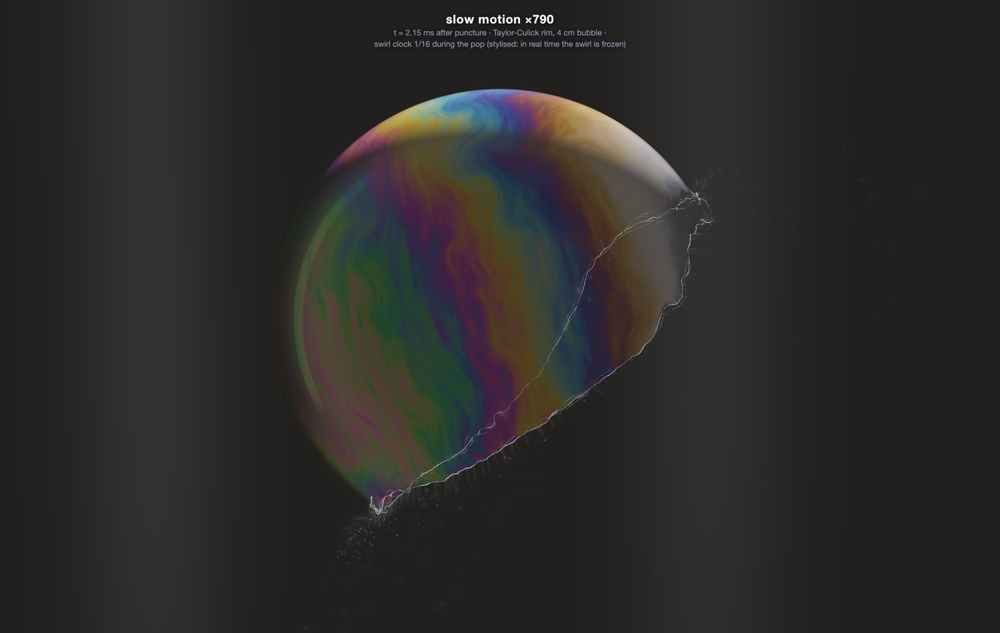

Open the live demoWatch it run (needs a browser with WebGL2) · The result · Results table · What is assumed · Check it yourself · Status
Vortex Echo is a small simulation of a soap bubble. Point vortices swirl over its film. Then the bubble is punctured: a rim opens around the hole, the film ripples and wobbles, and droplets fly off. Then the whole film plays backwards. For the two call sequences the page plays, the auto and click films described below, the proofs show that the bubble ends up where it began: from the stated start states and within the stated bounds, and assuming the host leaves the module's memory alone, every byte of the simulation's state in the module's memory (the "module snapshot", defined below) comes back. Two working areas of memory, a small stack area and a scratch area, are not part of that state. The film theorems leave them free (they may end with any values), and in the recorded test runs they did change.
All of the simulation's state lives in one WebAssembly module, vortex_a1.wasm (30,548 bytes, no imports; SHA-256 a3cf8c821534dd1613e2c6c6251a003320c40d5eb2dfc8e16a871c59636aede6). The page calls its exports (init, tick_forward, tick_backward, puncture) and reads its memory, to draw and for the check below. The film colours come from tracers on the GPU, and they are drawing only: nothing here is proved about them.
The module was designed to be reversible. The vortices and the rim and ring arrays move by exactly invertible pairs of 32-bit integer updates (for example a "Fredkin leapfrog": (a, b) <- (b, a + f(b)) forward, (a, b) <- (b - f(a), a) back, which inverts whatever f computes). Each droplet is logged with the tick it was born on, so a backward tick can take back exactly the droplets that tick made. The puncture is different: it builds a speed table in floating point, and stepping back over the puncture tick clears that table and the other puncture data again. The proofs check that the shipped bytes behave this way, on the start states and domains they state.
demo/ is the page, served as static files. On load it checks that the module's SHA-256 is the one above. The default film swirls for 120 ticks, punctures the bubble by itself (the "auto" puncture), lets the pop run to tick 640, and then you can reverse it. At the end of the pop (520 ticks after the puncture) the page stops going forward without calling the module again. You can also click the bubble to puncture it yourself (the "click" film). The verify reversal button runs forward from the current tick (up to 1,200 ticks, toward the end of the pop), runs back the same number of ticks, and then compares the module snapshot (bytes [16384, 1966080) of its memory, defined below) and, separately, the active GPU tracer buffer with where they started. It reports the two counts of differing bytes separately: the module snapshot is what the proofs are about, while the tracers are drawing state, a browser measurement about which nothing is proved. The stack and scratch areas are not compared. At the end of the pop the page cannot go forward, so the button reports "no ticks tested" instead of a result; reverse some way first. That check is a test in your browser, not a proof. Known limitation: while a check runs, only the verify button is disabled. Pressing reset, clicking the bubble or using the other controls during a check can disturb it, and the result it then shows is not a valid test. Starting a check while a reset is still playing back can disturb it too. So let a reset finish before pressing verify, and leave the controls and the bubble alone until the check ends (a note above the demo's controls says so too). A fix is being reviewed. If a GPU tracer read fails (for example after the browser loses the WebGL context), the check shows "GPU tracer comparison unavailable" instead of a tracer count.
The proofs are in HOL Light, a proof assistant with a small trusted kernel. They use a HOL Light model of WebAssembly from the hol-hearth project, and they are about the exact bytes of vortex_a1.wasm, not about the C source it was compiled from.
Call the module's simulation state the module snapshot (the snapshot for short): the 487,424 32-bit words at bytes [16384, 1966080) of its 4 MiB memory (clock, puncture data, vortices, rim and ring arrays, droplet log and speed table). The end result has two parts.
1. One tick (C8e). Take any snapshot in a stated domain, with the module's own functions in its call table and global 0 = 16384. The domain asks for 1 to 640 vortices, and the rest depends on which branch the next tick takes. A plain tick (no puncture pending and no automatic puncture due) needs a clock below 0xffffffff. The tick that does the automatic puncture needs a clean puncture area, a direction that is not all zero and a clock below 0xfffffffe. After a puncture at tick P, a clock before P is excluded, and the branch is decided by comparing the clock T, unsigned, with P + 520 computed as a 32-bit word: a pop tick (T below it) needs a well-formed droplet log, and the end state (T at or above it) needs nothing more. When P + 520 < 2^32 this means the familiar reading: pop ticks are the 520 ticks after the puncture tick, and the end state comes after them. (If P + 520 wraps, the state counts as the end state at once.) On such a snapshot, one call of tick_forward leaves a snapshot that is a fixed function of the old snapshot alone, named va1_fwd in the proofs. Nothing else in memory influences it. This covers plain swirl ticks, pop ticks (with the droplets that are born given by an explicit formula) and the tick on which the automatic puncture happens. At the end state, tick_forward returns 0 and leaves the snapshot and the globals as they were (VA1_FWD_FUNCTION, which speaks only about the snapshot and globals; where the C8e class sentence says "nothing changes", this is what is proved). That the whole memory is left as it was is a separate theorem of rung C2, VA1_POP_HCALL_END, under its own premises (among them: a puncture tick P is set, P <= T, and P + 520 computed as a 32-bit word is <= T) and in C2's model of calls (wasmc); the end calls inside the films below carry the same whole-memory statement.
tick_backward inverts those steps, within a narrower scope. The proofs leave the puncture's float computation of the speed table as a parameter PT; va1_fwdt PT is the forward step for that choice, and the shipped va1_fwd is one instance. For every PT: on each snapshot that va1_fwdt PT produces from a domain snapshot other than the end state, one call of tick_backward returns 1 and leaves va1_bwd of the snapshot. On the domain minus the end state, va1_bwd undoes va1_fwdt PT word for word, and va1_fwdt PT is one-to-one. C8e claims nothing for tick_backward on other snapshots, and the end call that returns 0 has no inverse claim. The click film below covers its complete call sequence, backward calls included. When n = 0 there, the backward call made right after the click starts from the clicked snapshot, which is not in these images.
2. The films (C8f). The three ways the page plays the bubble are proved as whole sequences of calls to tick_forward, tick_backward and puncture. Along the way the theorems name selected snapshots: as va1_fwd steps from a named point or, in the click film, through the click step va1_clk. The list below says which. (This follows the corrected wording of the C8f class sentence; see Status.)
tick_forward and tick_backward calls whose planned clock offset from the start, counting each forward call as +1 and each backward call as -1, stays in [0, K]. Then every call returns 1, and the sequence ends in va1_fwd iterated e times on the start, where e is the final planned offset. So the end snapshot depends only on the start and that offset, not on the path, and the same holds after each call of such a sequence. So for k <= K, k forward calls followed by k backward calls restore the whole snapshot: the droplets that were born, the rings, and the vortex slots the model does not use. A third theorem starts at the first pop tick (T = P): 520 forward calls, one more that returns 0 and changes nothing (it leaves the whole memory as it was), then 520 backward calls restore the snapshot. Apart from that return-0 call, these theorems say nothing about bytes outside the snapshot. Rung C2, under its own premises, proves a separate byte frame for its pop-window walks (va1_pop_frame, in VA1_POP_SCRUB_FRAME and VA1_POP_CHAIN_BYTES): every byte of the 4 MiB memory is unchanged except the clock word [16392, 16396), the droplet-count word [16400, 16404) and the range [1114112, 2039808). That range runs past the end of the snapshot (1966080), so C2's frame does not cover the scratch area [1966080, 2039808) either.va1_fwd iterated K + n times on the start (taking smaller n, this names the snapshot after each forward call from the K-th on). The snapshots before the K-th forward call and during the backward run are not named; for them only the end result is stated. The same holds for the film run to the end of the pop and all the way back (n = 520), with one extra tick_forward call at the end tick that returns 0 and leaves the whole memory as it was (VA1_FILM_AUTO_TO_END_N). The page never makes that extra call: it stops at the end tick before calling the module, so what it runs is the film without it (VA1_FILM_AUTO_N with n = 520).puncture call whose direction is not all zero (it returns 0), then n forward calls (n <= 520) and n + K backward calls. The end result is the same as for the auto film. Three snapshots are named: after the K forward calls (va1_fwd iterated K times on the start); after the puncture (va1_clk of that snapshot: the click step, which sets the puncture tick to the current clock, with no swirl tick); and after the n forward calls (va1_fwd iterated n times on the clicked snapshot). Taking smaller K or n names the earlier forward points too. The snapshots during the backward run are not named. As for the auto film, a second theorem (VA1_FILM_CLICK_TO_END_N) runs to the end of the pop with one extra tick_forward call that returns 0 and leaves the whole memory as it was, a call the page does not make.va1_bwd undoes "one forward step, then the click step va1_clk". As host calls, that pair and its undo are covered only inside the click film.For every allowed K and n, inputs meeting the film premises exist, and so does a pop-window start (VA1_C8F_SAT).
Earlier steps of the chain (C1 to C8p) prove the pieces these rest on: each tick, the puncture routine, the droplet births and the speed table.
From single ticks to films to the end result. Each row links to its frozen spec, the theorems it claims, the receipt of its official proving run, and the cold replay. The reviewed wording of each result, with what it does not cover, is its class sentence (the class link), a summary; the exact premises are the theorem statements in the frozen spec. The labels are short and give the main premises; where a label and its class sentence differ, the class sentence holds, and the frozen theorem statements in the specs are the authority over both. For C8f and C8b the link goes to the corrected version (r2; see Status).
| step | what is proved | spec | theorems | receipt | cold replay | wording |
|---|---|---|---|---|---|---|
| tick (C1) | Swirl ticks from clock 0 (no puncture pending, automatic puncture off, 1 <= N <= 640): for any n < 2^32, n forward then n backward calls restore the clock, the model and the vortex words in use; every other byte is unchanged except the scratch area and the unused vortex words, which are not pinned | chain_c1_final.spec | VA1_NP_FILM_INVERSEVA1_NP_FILM_BYTESVA1_NP_SCRUB | chain_c1_final | reproduced | class |
| tick (C8a-tick) | A forward pop tick, under the entry conditions of VA1_TICK_FORWARD_POP_R5C_U, with the droplets it gives birth to named by an explicit formula | c8a_r4n.spec | VA1_TICK_FORWARD_POP_R5C_NU | c8a_r4n | reproduced | class |
| tick (C8p-P67) | The automatic puncture tick and the click puncture call, under the premises of the theorems they extend, with the speed table and header words named (as terms; no float value claimed) | c8p_nu.spec | VA1_TICK_FORWARD_PUNCT_NUVA1_HCALL_PUNCTURE_N | c8p_nu_final | reproduced | class |
| film (C8f-pop) | Pop window, with the module's functions in place, from a pop-tick domain snapshot with the walk inside the pop: for any sequence of forward and backward tick calls whose planned clock offset (+1 forward, -1 back) stays in [0, K], every call returns 1 and the snapshot depends only on the start and the final offset; k <= K forward then k back restores the snapshot; from T = P, 520 forward calls to the end, one more forward call that returns 0 and changes neither globals nor memory, and 520 back to the start | c8f.spec | VA1_POP_SCRUB_NVA1_POP_CHAIN_NVA1_POP_CHAIN_TO_END_N | c8f_final | reproduced | class (r2, corrected) r1 as reviewed |
| film (C8f-auto) | Auto film (the page default), from tick 0 with no puncture pending, a clean puncture area and 1 <= N <= 640, with the automatic puncture set for tick K (1 <= K, K + 520 < 2^32, direction not all zero): K + n forward calls (n <= 520), then n + K back, restore every byte but two named areas; snapshot named after the forward calls from the K-th on, not before them or during the backward run | c8f.spec | VA1_FILM_AUTO_NVA1_FILM_AUTO_TO_END_N | c8f_final | reproduced | class (r2, corrected) r1 as reviewed |
| film (C8f-click) | Click film, from tick 0 with no puncture pending, a clean puncture area and 1 <= N <= 640, with the automatic puncture off or after tick K (1 <= K, K + 520 < 2^32): K forward calls, a puncture call with a direction not all zero (returns 0), n <= 520 forward, then n + K back, restore every byte but the same two areas; snapshots named after the K forward calls, after the puncture (the click step va1_clk) and after the n forward calls, not during the backward run | c8f.spec | VA1_FILM_CLICK_NVA1_FILM_CLICK_TO_END_N | c8f_final | reproduced | class (r2, corrected) r1 as reviewed |
| endpoint (C8e) | On the stated domain (conditions by branch), tick_forward is a function va1_fwd of the snapshot (the end call returns 0 and leaves the snapshot and globals as they were; whole memory: C2's VA1_POP_HCALL_END). For any table parameter PT, on the snapshots va1_fwdt PT produces off the end state, tick_backward is the function va1_bwd, which undoes va1_fwdt PT; C8e claims nothing for tick_backward on other snapshots | c8e_defs.specc8e.spec | VA1_FWD_FUNCTIONVA1_BWD_FUNCTIONVA1_BWD_FWDVA1_FWD_INJ | c8e_defs_probe c8e_final | c8e_defs_probe: reproduced c8e_final: reproduced | class |
| endpoint (C8f-pair) | An equation between snapshot functions, not a host-call theorem: for a clean domain snapshot on the plain branch (no puncture pending or due; clock after the step not 0xffffffff), va1_bwd undoes "va1_fwd, then the click step va1_clk" | c8f.spec | VA1_CLICK_PAIR_INV | c8f_final | reproduced | class (r2, corrected) r1 as reviewed |
The words "spec", "receipt", "check-rung" and "cold replay" mean:
hearth attest summary of each receipt (.attest.json) and its inspect listing.| row | kind | label | spec | receipts | check-rung | cold replay | wording |
|---|---|---|---|---|---|---|---|
| C1 | film | no-pop round trip from clock 0 (no pop pending, auto-pop word 0, 1 <= N <= 640): for any n < 2^32, n forward then n backward tick calls restore the clock, pop words, model and the 3N vortex words in use; every other byte unchanged except the scratch area and the unused vortex words (not pinned) | chain_c1_final.spec | chain_c1_final | - | reproduced | class |
| C2 | film | v1 pop window, from a start in the window after a puncture (p <= t0, p + 520 < 2^32, 1 <= N <= 640, well-formed droplet log; the puncture tick itself not covered): any sequence of forward/backward tick calls whose planned clock walk (+1 per forward, -1 per backward) stays in [t0, t0 + K] (t0 + K <= p + 520) has every call return 1 and ends at clock u with the used vortex words u - t0 swirl steps of the start (births only "some list"); k forward then k backward calls (t0 + k <= p + 520) restore the clock, the vortex words in use, rings, droplets, header and speed table (scratch and unused vortex words not pinned) | chain_c2_final.spec | chain_c2_final | - | reproduced | class |
| C3a | tick | tick_backward at the pop tick (clock = pop word, pop word neither -1 nor 0, 1 <= N <= 640): adds the mismatch count to healErr (as a 32-bit word), clears the pop state, undoes the swirl tick, returns 1 | chain_c3a_final2.spec | chain_c3a_final | PASS | reproduced | class |
| C3b | routine | f25 puncture seed, successful branch (no pop pending: word 16396 = -1, direction not all zero): finishes, returns 0, writes only the named regions; guards: with a pop pending it returns 1 whatever the direction; with no pop pending and an all-zero direction it returns 2 | chain_c3b_final.spec | chain_c3b_final | PASS | reproduced | class |
| C4 | film | click and auto-puncture films from tick 0 with no puncture pending, a clean puncture area and 1 <= N <= 640 (1 <= K, K + 520 < 2^32, n <= 520; auto: auto-pop word K; click: auto-pop word 0 or above K), with the puncture step modelled by a TESTED relation (not proved): the click call, or in the auto form the K-th forward call (a plain swirl tick followed by that relation, after K - 1 proved forward calls) | chain_c4_final.spec | chain_c4_final | PASS | reproduced | class |
| C5 | routine | puncture helpers f32/f34/f33 to f25 and the trunc guard (parts 1 and 2) | chain_c5_leaves.specchain_c5_punct.specchain_c5_tof25.spec | chain_c5_leaves_final chain_c5_punct_final chain_c5_tof25_final | PASS | chain_c5_leaves_final: reproduced chain_c5_punct_final: reproduced chain_c5_tof25_final: reproduced | class |
| C5' | model | nested call model wasmn on the chain; wasmc results carried over; puncture call rules | chain_c5p.spec | chain_c5p_final | PASS | reproduced | class |
| C6a | routine | one host call of the export puncture (click) from P = -1, nonzero clock, arguments not all zero, memory size 4194304, global 0 = 16384 and the call map sending 25, 32 and 34 to the module's own f25, f32 and f34: always finishes, returns 0, with the pop set-up and byte frame named (no float value, table entry, frame double or header word 9..29 claimed) | chain_c6a_final.spec | chain_c6a_final | PASS | reproduced | class |
| C6b | tick | tick_forward on the auto-pop branch (nested model), under its entry premises (P = -1, auto-pop word = T + 1 <> 0, direction words at 16516..16524 not all zero, 1 <= N <= 640, global 0 = 16384, call table): returns 1; memory = the C6a puncture relation applied to the intermediate swirl state (table values, header words 9..29 and scratch not specified) | chain_c6b_final.spec | chain_c6b_final | PASS | reproduced | class |
| C7b | film | the page default pop film, auto puncture, from tick 0 with no puncture pending, a clean puncture area and 1 <= N <= 640 (auto-pop word K, 1 <= K, K + 520 < 2^32, n <= 520, auto-puncture direction not all zero): back at the start except three unpinned regions (stack area, unused vortex slots, scratch) | chain_c7b_final.spec | chain_c7b_final | PASS | reproduced | class |
| C7a | film | the click pop film, from tick 0 with no puncture pending, a clean puncture area and 1 <= N <= 640 (auto-pop word 0 or above K, 1 <= K, K + 520 < 2^32, n <= 520, puncture direction not all zero): back at the start except the same three unpinned regions | chain_c7a_final.spec | chain_c7a_final | PASS | reproduced | class |
| C8b | tick | 11 named tick contracts (plain and pop ticks both ways, un-puncture, auto puncture), under their original preconditions, also preserve the unused vortex slots (gap G2); VA1_TICK_INVERSE_VK not strengthened; film forms not re-run (class sentence corrected: r2) | c8b_final.spec | c8b_final | PASS | reproduced | class (r2, corrected) r1 as reviewed |
| C8a-births | routine | droplet birth f13, from VA1_BIRTH_EQ's precondition, appends a named list of records (VA1_BIRTH_EQ; born probe) | c8a_born.specc8a_birth.spec | c8a_born_probe c8a_birth_final | PASS | c8a_born_probe: reproduced c8a_birth_final: reproduced | class |
| C8a-tick | tick | pop-window forward tick, under the entry conditions of VA1_TICK_FORWARD_POP_R5C_U, with the births named (A8/A9, VA1_TICK_FORWARD_POP_R5C_NU) | c8a_r4n.spec | c8a_r4n | PASS | reproduced | class |
| C8p-P12 | routine | under the entry conditions of VA1_F32_VALUE and VA1_F34_VALUE (f34 called as f34(16352, 16320, 16288) with a 4194304-byte memory): f32 returns a named term; f34 stores six f64 words that are named terms (float rounding unspecified; sin/cos routine of the puncture) | c8p_leaves2.spec | c8p_leaves2_final | PASS | reproduced | class |
| C8p-P34 | routine | f33, under VA1_F33_TO_F25's entry conditions, reaches its call 25 with the speed table named | c8p_f33.spec | c8p_f33_final | PASS | reproduced | class |
| C8p-P5 | routine | f25, under VA1_F25_OK's entry conditions, also writes the named header words 9..29 | c8p_f25h2.spec | c8p_f25h2_final | PASS | reproduced | class |
| C8p-P67 | tick | auto puncture tick and click puncture, under the premises of the theorems they extend, with the named speed table and header | c8p_nu.spec | c8p_nu_final | PASS | reproduced | class |
| C8e | endpoint | with the module's functions in place (va1_fs_all) and global 0 = 16384: tick_forward is a named function va1_fwd of the snapshot on va1_dom (conditions by kind; returns 0 at the end state va1_kind = 3, else 1); tick_backward is va1_bwd on the image va1_imgt PT of va1_fwdt PT, for every table parameter PT (va1_fwd is one instance); va1_bwd inverts the forward step only off the end state (VA1_BWD_FWD needs ~(va1_kind sg = 3)) (defs probe + E1..E4) | c8e_defs.specc8e.spec | c8e_defs_probe c8e_final | PASS | c8e_defs_probe: reproduced c8e_final: reproduced | class |
| C8f-pop | film | C2 pop window again (wasmc, with the module's functions in place: va1_fs_all), from a kind-1 snapshot in va1_dom with P + 520 < 2^32 and T + K <= P + 520: for any sequence of forward/backward tick calls whose planned clock offset (+1 per forward, -1 per backward) stays in [0, K], every call returns 1, and after each prefix of the sequence the snapshot is ITER e va1_fwd of the start, e that prefix's final offset (births, rings and unused vortex words included); k forward then k backward calls (T + k <= P + 520) restore it; from T = P: 520 forward calls, one forward call that returns 0 and changes neither globals nor memory, then 520 backward calls restore the start snapshot | c8f.spec | c8f_final | PASS | reproduced | class (r2, corrected) r1 as reviewed |
| C8f-auto | film | auto pop film, from tick 0 with no puncture pending, a clean puncture area and 1 <= N <= 640 (C7b premises: auto-pop word K, 1 <= K, K + 520 < 2^32, n <= 520, direction not all zero; wasmn): the snapshot after the K + n forward calls is ITER (K + n) va1_fwd of the start (snapshots before the K-th call and during the backward run not named); the backward run restores every byte below 4194304 except the shadow-stack area [16288, 16384) and the vort scratch [1966080, 2039808): C7b's unused-slot exclusion is gone | c8f.spec | c8f_final | PASS | reproduced | class (r2, corrected) r1 as reviewed |
| C8f-click | film | click pop film, from tick 0 with no puncture pending, a clean puncture area and 1 <= N <= 640 (C7a premises: auto-pop word 0 or above K, 1 <= K, K + 520 < 2^32, n <= 520, direction not all zero; plus fs 33 = puncture; wasmc): named snapshots: ITER K va1_fwd of the start after the K forward calls, va1_clk a0 a1 a2 of that after the puncture, ITER n va1_fwd of the clicked snapshot after the n forward calls; the backward run ends in va1_film_bytes_s of the start (its snapshots not named) | c8f.spec | c8f_final | PASS | reproduced | class (r2, corrected) r1 as reviewed |
| C8f-pair | endpoint | click pair, a pure HOL equation between snapshot functions (not a host-call theorem): va1_bwd (va1_clk a0 a1 a2 (va1_fwd sg)) = sg for clean kind-0 sg in va1_dom whose clock does not reach 0xffffffff | c8f.spec | c8f_final | PASS | reproduced | class (r2, corrected) r1 as reviewed |
These limits come from the class sentences (two of them corrected; see Status). They are part of the result, not footnotes.
init is tested, not proved. The theorems start from states of a stated shape. That init(seed, ...) leaves such a state was tested on the real bytes (8 seeds for C1; 24 header checks with 24 planted mutants, plus a matrix of films, for C4 and C7), but it is not proved.va1_ptbl) and no float value is claimed. Comparisons and trapping conversions are exact on the bits.tick_backward on snapshots outside C8e's images (other than the backward calls of the films); refused calls or other exports. Some earlier rows (for example C6b and C8p-P67) have their own premises, which cover some of these states; their class sentences say which.The module. shasum -a 256 module/vortex_a1.wasm should print a3cf8c82...6aede6, the hash every theorem names.
The files are the proved files. From a checkout of this repository:
python3 -I tools/check_tree.pyFor every receipt this checks by SHA-256 that the proof source, the frozen spec, the wasm modules and every project file the run read (its closure inventory) are the files published here. It needs only Python's standard library and re-runs no proof. Expected output: 24 receipts, 1607 file checks, 0 problems.
Re-running a proof. This needs a Linux host with HOL Light at 2a1cea8f and hol-hearth at the recorded revision (6adb41ce; 81c0fa6c for C1 and C2) with its wasm profile. hol-hearth is not public yet, so for now only its maintainers can do this step. The quickest is part 1 of C5, whose files need no overlay. From proof-tree/:
hearth prove tasks/bubble-echo/vortex/proofs/chain_c5_leaves_final.ml --profile wasm \
--spec tasks/bubble-echo/vortex/proofs/chain_c5_leaves.specIt should end with PASSED chain_c5_leaves_final.ml: 14/14 bindings proved, 14/14 spec bindings matched, 24/24 spec pins matched, 0 new axioms. For the other results, copy tasks/bubble-echo/vortex/chain-nov/overlay/. over the tree first. For the layered C8 runs, see the chain README. It was written for the project's private working repository: its step 1 (the claim generator, its tests and tools/vab) uses files that are not published here, so use tools/check_tree.py instead. Its step 2 (the hearth prove commands and recipe/finish-c8-stages.json) applies to proof-tree/ as published: where it says to make a worktree and work from it, use a copy of proof-tree/ with the overlay copied over it, and run the commands from that copy. Those commands are written from the run records. They have not been re-run from this repository.
Checked on 2026-11-17:
c8a_born_probe, c8a_birth_final, c8p_leaves2_final, c8p_f25h2_final, c8p_f33_final and c8e_defs_probe) were cold-checked on 2026-11-17, after the snapshot of the project's private ledger this page was built from (VAB a70e29d0). That ledger still lists those six as not cold-replayed until a follow-up update; claims.json here carries the new status and a note saying so (cold_status_note).claims.json were corrected. The two class sentences are left as they were reviewed, and each has a corrected version beside it, with an erratum at the top: C8f-r2.txt (the films name the snapshot at stated points, not at every intermediate step, and the click pair is an equation between snapshot functions, not a host-call theorem) and C8b-r2.txt (11 named tick theorems gained the unused-slot statement, not every tick theorem: VA1_TICK_INVERSE_VK did not). The tables link the corrected versions. The frozen spec c8f.spec is unchanged, so its comment header still repeats the r1 wording; its theorem statements are the authority. Its test note's table check (PTCHECK) sampled 32 cells per table (4 fixed, 28 random), and its full-snapshot comparisons used the table the module wrote. The project's private ledger (VAB a70e29d0) still has the original wording until a follow-up update.claims.json the ordinary class-sentence fields of the C8f and C8b rows now give the corrected versions (the reviewed originals are kept as class_sentence_as_imported and related fields), the C8f film labels state their start conditions, and the C6a, C8e and C8f-pop labels name more of their premises (C8f-pop now also states the end call that returns 0) and the C4 label says which call the tested puncture relation models; the chain README's "Start here" points to this repository's claims.json; the demo checks the module's SHA-256 before instantiating it (on a mismatch nothing runs), reports "no ticks tested" at the end of the pop, counts the module snapshot and the GPU tracers separately and gives no tracer count when a tracer read fails, and its status line now sits above the control row. Astra's finding B.3 (other controls used during a check can disturb it) is not fixed in this update; see the known limitation under The demo. No theorem, spec, receipt or module byte changed. GPT-6.2 Sol reviewed these changes and the list of published files before publication.The proofs ran on hol-hearth 6adb41ce (C1 and C2 on 81c0fa6c), HOL Light 2a1cea8f, profile hol.s2n.wasm.v1. Host paths inside the receipt files (/home/bluestar/...) record where each run happened. They are not inputs.
| path | what |
|---|---|
demo/ | the page: vortex_a1.wasm plus the drawing code |
module/ | vortex_a1.wasm, its C source (vortex.c, ve_core.c), build notes and SHA256SUMS |
claims.json | the claim table: one row per result, with its receipts, spec, class sentence, cold status and reviews |
proof-tree/ | the proof sources and specs, at the same paths as in the project's working repository |
…/chain-nov/class/ | the reviewed class sentences, plus the corrected C8f-r2.txt and C8b-r2.txt |
…/chain-nov/evidence/ | receipt attests, inspect listings, cold-replay records, check-rung outputs and closure inventories |
tools/check_tree.py | the hash check above |
MANIFEST.sha256 | the SHA-256 of every other file here |